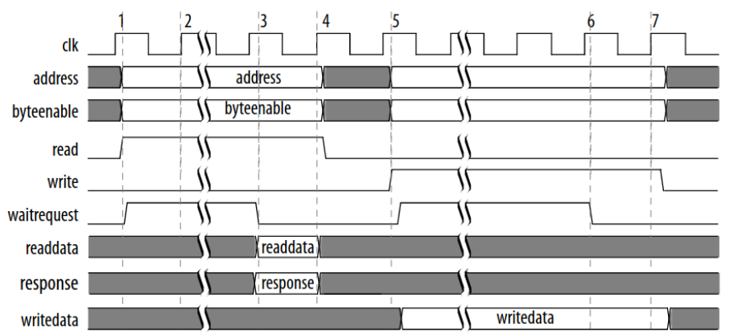
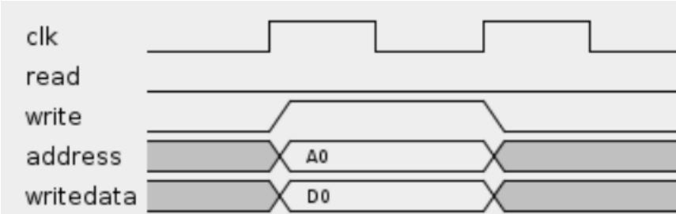

Firmware¶
Below is an in depth explanation of the mechanism responsible for the communication between the NIOS II processor and the IP Core, which is composed by the Avalon Interface and a register bank that connect the other components.
Avalon Interface¶
The Avalon Interface, according to its developer Intel (in “Avalon® Interface Specifications”, 2021, p.4): "Avalon® interfaces simplify system design by allowing you to easily connect components in Intel® FPGA. The Avalon interface family defines interfaces appropriate for streaming high-speed data, reading, and writing registers and memory, and controlling off-chip devices. Components available in Platform Designer incorporate these standard interfaces. Additionally, you can incorporate Avalon interfaces in custom components, enhancing the interoperability of designs.".
In other words, it is possible to conclude from this excerpt that, in addition to enabling the connection between Intel® FPGA components, that once the interfaces are added to Platform Designer, they can connect custom components, which we use for the IP-Rfid in our product. All documentation for other possible interfaces and connection is present in the document “Avalon® Interface Specifications”.
The Avalon Bus can be implemented with multiple features and modules. In this project, Avalon Memory-Mapped will be used, but other alternatives were considered, such as Avalon Interrupt Interfaces and Avalon Streaming Interfaces.
The Avalon Memory-Mapped (Avalon-MM) interface implements the writing and reading of interfaces for the other components used, including Memory, UART Chip and the NIOS II. The interface uses a Host and Agent system in which the Host is the provider of data and commands to the Agent, while the Agent responds to the Host.
These relations can be viewed in the images below, which represent an example of Host and Agent communication in the first image, and an example of writing to an address in the second one.


Register Bank¶
The register bank intermediates the communication between the NIOS II processor and the IP Core. Each access to the bus is done through a read or write command in which they carry data up to 32 bits, a value that represents the size of an integer in the programming language C, as it is the one implemented in the processor.
As seen in the table, this communication path is responsible for the IP peripheral settings, informing essential values for communication such as Tari, Delimiter and Status, as well as others shown below.
| offset | Name | Access | Size (bits) |
|---|---|---|---|
| 0 | REG_Settings | Read/Write | 32 |
| 1 | REG_Tari | Read/Write | 16 |
| 2 | REG_FIFO | Write | 32 |
| 3 | REG_Tari_101 | Write | 16 |
| 4 | REG_Tari_099 | Write | 16 |
| 5 | REG_Tari_1616 | Write | 16 |
| 6 | REG_Tari_1584 | Write | 16 |
| 7 | REG_Pw | Write | 16 |
| 8 | REG_Delimiter | Write | 16 |
| 9 | REG_RTcal | Write | 16 |
| 10 | REG_TRcal | Write | 16 |
| 3 | REG_Status | Read | 32 |
| 4 | REG_Receiver_data_out | Read | 32 |
| 5 | REG_Sender_usedw | Read | 8 |
| 6 | REG_Receiver_usedw | Read | 8 |
| 7 | REG_IP-ID | Read | 32 |
While some registers indicate a single variable, such as those that indicate Tari values, others carry multiple peripheral control variables with them, those being REG_SETTINGS and REG_STATUS.
0 - REG_Settings (R/W)¶
The Register Settings is responsible for the control of the IP_RFID, as a Read and Write register it is capable of setting flags, making pulses in specific bits and also activating components of the IP_RFID
| 31 | 30 | 29 | 28 | 27 | 26 | 25 | 24 |
|---|---|---|---|---|---|---|---|
| x | x | x | x | x | x | x | x |
| 23 | 22 | 21 | 20 | 19 | 18 | 17 | 16 |
| x | x | x | x | x | x | x | x |
| 15 | 14 | 13 | 12 | 11 | 10 | 9 | 8 |
| x | x | x | Receiver read request | Receiver reset | Sender clr finished send | x | Loopback |
| 7 | 6 | 5 | 4 | 3 | 2 | 1 | 0 |
| Sender is preamble | Sender start controller | Sender has_gen | Receiver enable | x | Sender clear FIFO | Sender enable | Sender reset |
- Bits 31 through 13 are not in use, instead being reserved for future implementations.
- Bit 12 -
Receiver read requeststores the read request flag for the Receiver FIFO; - Bit 11 -
Receiver resetstores the reset flag for the Receiver; - Bit 10 -
Sender clr finished sendstores the Sender clear finished send flag; - Bit 8 -
Loopbackstores the loopback flag used in testing the READER; - Bit 7 -
Sender is preamblestores the preamble flag for the Sender generator; - Bit 6 -
Sender start controllerstores the start controller flag for the Sender; - Bit 5 -
Sender has_genstores the generator flag for the Sender; - Bit 4 -
Receiver enablestores the enable flag for the Receiver; - Bit 2 -
Sender clear FIFOstores the clear FIFO flag for the Sender FIFO; - Bit 1 -
Sender enablestores the enable flag for the Sender; - Bit 0 -
Sender resetstores the reset flag for the Sender;
1 - REG_Tari (R/W)¶
The Register Tari carries the time parameter to the IP Core, in the software it is declared as an int and can vary between 313 to 1250 values. These range is calculated by multiplying frequency of the µProcessor times the tari range. The tari range is 6.25µs to 25µs, which is also stablished in EPC-GEN2 Documentation.
The tari is written in the Register Tari from least significant (0) to most significant bit (15) of the register. Depending only on the binary value for the Integer mentioned previously
| 15 | 14 | ... | 2 | 1 | 0 |
|---|---|---|---|---|---|
| x | x | ... | x | x | x |
2 - REG_FIFO (W)¶
The register FIFO carries the package, from the C Software to the IP Rfid through Avalon bus.
The FIFO register is also written from least significant (0) to most significant bit (31) of the register. In which the six least significant bits are the mask which carries the size of the data and the remaining 26 are reserved for data itself.
| 31 | 30 | ... | 2 | 1 | 0 |
|---|---|---|---|---|---|
| x | x | ... | x | x | x |
TARI limit Registers¶
The Registers 3 to 6 are called Registers Tari Boundaries, they stablish the 1%-time variation in which the READER can communicate with the TAG. If the TAG does not reply in time or if the Sender or Receiver peripherals delay, an error flag will be raised as if the communication had ended.
Each Tari Boundary is written its respective Register from least significant (0) to most significant bit (15) of the register. Depending only on the binary value for the Integer that it represents.
3 - REG_Tari_101 (W)
| 15 | 14 | ... | 2 | 1 | 0 |
|---|---|---|---|---|---|
| x | x | ... | x | x | x |
4 - REG_Tari_099 (W)
| 15 | 14 | ... | 2 | 1 | 0 |
|---|---|---|---|---|---|
| x | x | ... | x | x | x |
5 - REG_Tari_1616 (W)
| 15 | 14 | ... | 2 | 1 | 0 |
|---|---|---|---|---|---|
| x | x | ... | x | x | x |
6 - REG_Tari_1584 (W)
| 15 | 14 | ... | 2 | 1 | 0 |
|---|---|---|---|---|---|
| x | x | ... | x | x | x |
Preamble and Framesync time parameter registers¶
The following registers are also time parameters which can be seen in the Preamble and Frame-sync images, they are part of the RFID modulation and a future implementation of Radio frequency depends on these values to be set.
Each value written its respective Register from least significant (0) to most significant bit (15) of the register. Depending only on the binary value for the Integer that it represents.
7 - REG_Pw (W)
| 15 | 14 | ... | 2 | 1 | 0 |
|---|---|---|---|---|---|
| x | x | ... | x | x | x |
8 - REG_Delimiter (W)
| 15 | 14 | ... | 2 | 1 | 0 |
|---|---|---|---|---|---|
| x | x | ... | x | x | x |
9 - REG_RTcal (W)
| 15 | 14 | ... | 2 | 1 | 0 |
|---|---|---|---|---|---|
| x | x | ... | x | x | x |
10 - REG_TRcal (W)
| 15 | 14 | ... | 2 | 1 | 0 |
|---|---|---|---|---|---|
| x | x | ... | x | x | x |
3 - REG_Status (R)¶
In contrast to the REG_Settings, the REG_Status is a read only register from the processor. It carries errors and others status flags explained bellow.
| 31 | 30 | 29 | 28 | 27 | 26 | 25 | 24 |
|---|---|---|---|---|---|---|---|
| x | x | x | x | x | x | x | x |
| 23 | 22 | 21 | 20 | 19 | 18 | 17 | 16 |
| x | x | x | x | x | x | x | x |
| 15 | 14 | 13 | 12 | 11 | 10 | 9 | 8 |
| x | Receiver full | Receiver empty | Receiver sclear | x | Receiver clear error decoder | Receiver error decoder | x |
| 7 | 6 | 5 | 4 | 3 | 2 | 1 | 0 |
| x | x | x | x | Sender finished sending | x | x | Sender is fifo full |
- Bits 31 through 15 are not in use, instead being reserved for future implementations.
- Bit 14 -
Receiver fullstores the full flag for the Receiver FIFO; - Bit 13 -
Receiver emptystores the empty flag for the Recevier FIFO; - Bit 12 -
Receiver sclearstores the clear flag for the Receiver FIFO; - Bit 10 -
Receiver clear error decoderstores the clear error flag for the Receiver decoder; - Bit 9 -
Receiver error decoderstores the error flag for the Receiver decoder; - Bit 3 -
Sender finished sendingstores the finished sending flag for the Sender FIFO; - Bit 0 -
Sender is fifo fullstores the full flag for the Sender FIFO;
4 - REG_Receiver_data_out (R)¶
The Register Receiver data out is the output of the Receiver peripheral from the IP Rfid. This Register carries a package built from the signal received, this package comes from the FIFO in which it was stored. A combination of one or more packages read from this register makes a command.
This register is written from least significant (0) to most significant bit(31) of the register. In which the least six significant bits are the mask that carries the size of the data and the remaining 26 are reserved for data itself.
| 31 | 30 | ... | 2 | 1 | 0 |
|---|---|---|---|---|---|
| x | x | ... | x | x | x |
FIFO Package count Registers¶
The next two registers store the number of packages in their respective FIFOs. The former being the Sender FIFO and the latter being the Receiver FIFO.
Both registers are automatically filled by the Intel FIFO and are just read by the C software through the Avalon bus.
5 - REG_Sender_usedw (R)
| 7 | 6 | ... | 2 | 1 | 0 |
|---|---|---|---|---|---|
| x | x | ... | x | x | x |
6 - REG_Receiver_usedw (R)
| 7 | 6 | ... | 2 | 1 | 0 |
|---|---|---|---|---|---|
| x | x | ... | x | x | x |
7 - REG_IP-ID (R)¶
This register stores the ID of the IP-Rfid so that is possible to verify if the software is communicating properly with the IP-Rfid and if it is correctly addressing the Avalon bus.
The binary value above can be read in Hex as 0XFF0055FF, and it is written to the Register IP-ID from least significant (0) to most significant bit (31).
| 31 | 30 | 29 | 28 | 27 | 26 | 25 | 24 |
|---|---|---|---|---|---|---|---|
| 1 | 1 | 1 | 1 | 1 | 1 | 1 | 1 |
| 23 | 22 | 21 | 20 | 19 | 18 | 17 | 16 |
| 0 | 0 | 0 | 0 | 0 | 0 | 0 | 0 |
| 15 | 14 | 13 | 12 | 11 | 10 | 9 | 8 |
| 0 | 1 | 0 | 1 | 0 | 1 | 0 | 1 |
| 7 | 6 | 5 | 4 | 3 | 2 | 1 | 0 |
| 1 | 1 | 1 | 1 | 1 | 1 | 1 | 1 |